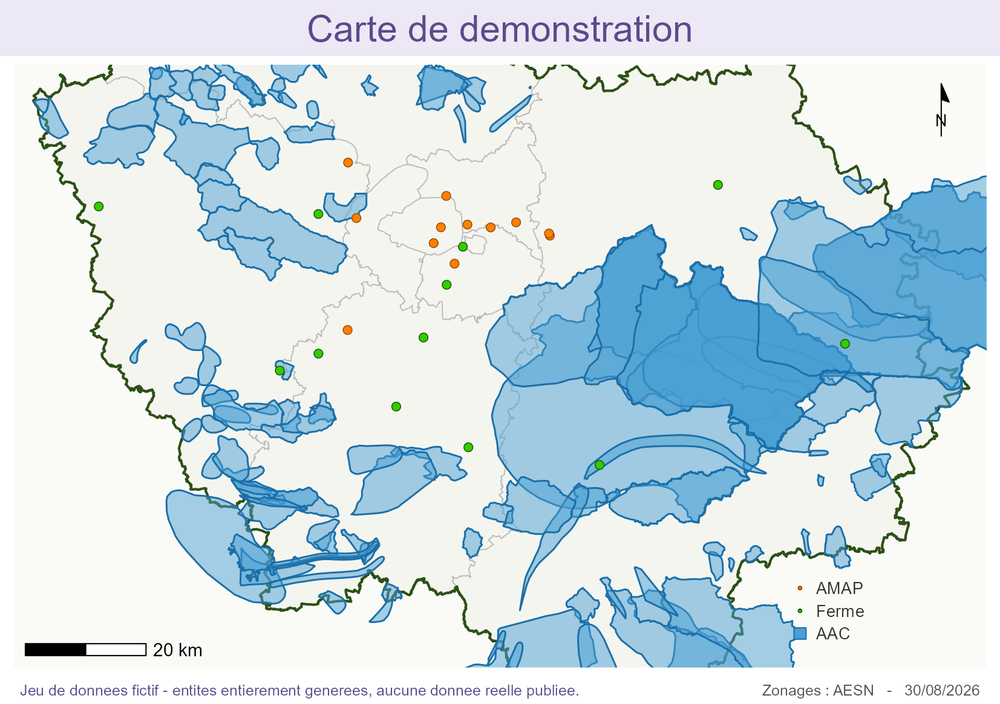

Carte AMAP Île-de-France
Il n'y a pas de serveur. Le moteur R et ses paquets — dont sf et leaflet — se téléchargent maintenant et s'exécutent en WebAssembly, sur votre machine.

Hébergement statique, aucune donnée transmise. Les 405 AMAP et 400 fermes affichées sont entièrement fictives, générées à graine fixe.